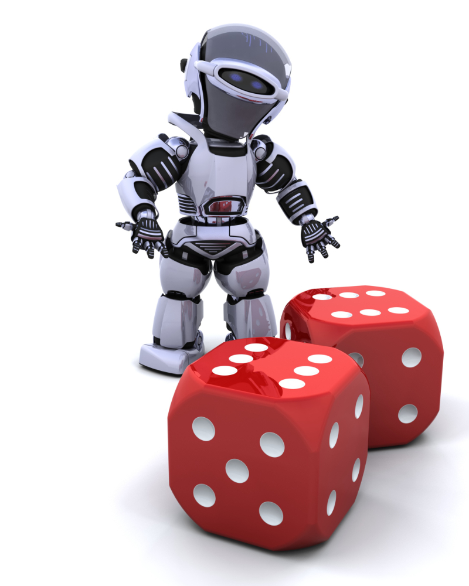

Cubes & Dice
Cube is a three-dimensional figure which can only be made out of a square. Square when given a height equal to one of the sides, becomes a cube. Die/Dice is a three-dimensional figure with each of its six sides/faces showing different numbers/letters/colors etc
Important Facts of Cube and Dice
- A cube has 6 square faces or sides
- A cube has 8 points (vertices)
- A cube has 12 edges
- Only 3 sides of a cube are visible at a time (known as “Joint Sides”) and these sides can never be on the opposite side of each other
- Things that are shaped like a cube are often referred to as ‘cubic’
- Most dice are cube shaped, with the numbers 1 to 6 on the different faces.
